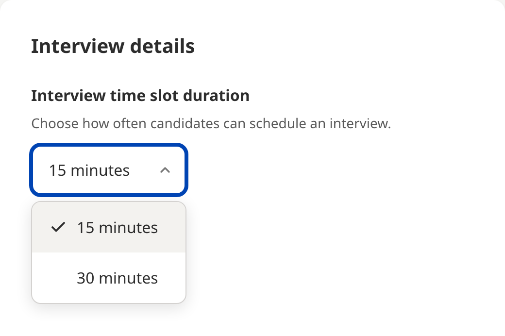

Choosing your interview slot length
What the 15 or 30 minute interview slot setting does, where to set it before you publish, and how it works with the number of interviews your team can run at once.
What the setting does
Every JobFairX event runs on time slots. Candidates request an interview by choosing a start time, and the slot length decides how far apart those start times are.
The setting is called Interview time slot duration and offers two choices: 15 minutes and 30 minutes. The line under it says what it does: Choose how often candidates can schedule an interview. Pick 30 and candidates see a start time every half hour. Pick 15 and they see one every quarter hour.

Where to set it
You choose the slot length while you set up the event, under Interview details in Interview settings.
- While you set up the event, go to Interview settings.
- Under Interview time slot duration, choose 15 minutes or 30 minutes.
- Set how many interviews your team can run in each time slot, then continue.
Once you publish your jobs for the event, the slot length is locked, because candidates start requesting interview times straight away. Choose it before you publish.
How slot length and capacity work together
Slot length is not the same as capacity. A second setting, How many interviews can your team run in each time slot?, decides how many candidates can book the same start time. Shorter slots do not give you more interviews on their own: 30 minute slots with four interviews in each, and 15 minute slots with two in each, fill the same day.
A standard event runs from 11:00 AM to 3:00 PM. At 30 minutes that is 8 start times; at 15 minutes it is 16. Multiply the start times by the interviews per slot and you have the most interviews the day can hold.
| Slot length | Start times, 11:00 AM to 3:00 PM | With 2 interviews per slot | With 4 interviews per slot |
|---|---|---|---|
| 30 min | 8 | 16 interviews | 32 interviews |
| 15 min | 16 | 32 interviews | 64 interviews |
The busiest slot sets your staffing. If four candidates can book 11:00 AM, you need four interviewers signed in at 11:00 AM, and the setup page warns you when a slot asks for more people than you have added. See Adding interviewers.
What candidates see
Candidates see the start times inside your event hours and request the one that suits them. If Auto accept interviews is on, the time is confirmed straight away; if it is off, the request waits for you under Candidates awaiting your response in the lobby. Either way, the candidate's confirmation and reminders show the start time you set, and the interview is expected to run to the slot length.
What to do next
Where to go from here.
- Creating and editing events Adding jobs, choosing how you interview, and setting capacity.
- Adding interviewers Bringing colleagues onto an event so they can interview with you.
- Running your event day What the lobby shows before and during an event, and how to run an interview.
- Panel interviews Bringing more than one interviewer into the same video interview.
- Setting up automations Messages that send themselves as candidates move through your process.
Still need help?
If something on this page does not match what you see in your account, contact JobFairX support and include your event name and date.